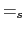
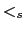
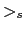
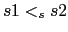
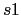
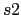

Strings são arrays de caracteres (arrays com elementos do tipo char) que DEVEM terminar com
'\0' (o caracter NUL). Se você usa o nome NUL em seu
programa, então é necessária a definição
#define NUL '\0' .
No exemplo acima, embora não tenhamos escrito explicitamente o caracter NUL, o compilador automaticamente o colocou como o último elemento do array arr2[]. Portanto, o tamanho de arr2[] é 6: 5 para os caracteres que digitamos (ci208) e 1 para o caractere NUL que o compilador introduziu automaticamente. As definições abaixo são equivalentes.
char arr2[] = {'c','i',' ', '2','0','8','\0'};
char arr2[] = {'c','i',' ', '2','0','8', NUL};
O caractere NUL marca o fim de um string. Outros exemplos:
/* a maneira tediosa */
char name1[] = { 'j','o','s','e',' ','s','i','l','v','a','\0' };
/* e a maneira facil */
char name2[] = "jose silva";
Embora o primeiro exemplo seja um string, o segundo exemplo mostra
como strings são geralmente escritos (como constantes). Note que se
você usar aspas quando escreve uma constante, você não precisa
colocar '\0', porque o compilador faz isso para você.
Quando você for criar um array de caracteres de um tamanho específico, lembre-se de adicionar 1 para o tamanho máximo de caracteres esperado para armazenar o caractere NUL. Por exemplo, para armazenar o string ``programar e divertido'', você precisa de um array de tamanho 22 (21 caracteres + 1 para o NUL).
Strings podem ser impressos usando printf() com o especificador de formato %s. Por exemplo:
main()
{
char mensagem[] = "tchau";
printf("ola\n%s\n", mensagem);
}
A saída deste programa é:
ola
tchau
A função puts() simplesmente imprime um string e depois pula de linha. Nenhuma opção de formatação pode ser definida. A função puts() somente pega um string como argumento e o imprime. O programa abaixo tem a mesma saída que o programa anterior.
main()
{
char mensagem[] = "tchau";
puts("ola");
puts(mensagem);
}
A função gets() lê uma linha de texto digitado no teclado e a armazena em um string. Veja o exemplo abaixo:
main()
{
char nome[100];
printf("Entre seu nome: ");
gets(nome);
printf("Oi, %s.\n", nome);
}
Exemplo de execução
Entre seu nome: Jose Silva Oi, Jose Silva.
Passando um nome de array para a função gets(), como ilustrado no programa acima, coloca a linha inteira digitada pelo usuário no array nome (tudo até que seja teclado enter). Note que se o usuário digitar caracteres demais (neste caso, mais de 99 caracteres), isso causará um erro de acesso fora dos limites (que pode ser PERIGOSO !!)
A função scanf() pode ser usada de maneira similar. A única diferença é que o scanf() lê somente a primeira palavra (tudo até que de digite um separador - um espaço em branco, tabulação, ou enter). Além disso, como estamos passando um array como argumento para o scanf(), O & QUE GERALMENTE PRECEDE O ARGUMENTO NÃO DEVE ESTAR PRESENTE.
main()
{
char nome[100];
printf("Entre seu nome: ");
scanf("%s", nome);
printf("Oi, %s.\n", nome);
}
Exemplo de execução
Entre seu nome: Jose Silva Oi, Jose.
Note que somente o primeiro nome é lido pelo scanf() porque a função para no primeiro espaço em branco que encontra (enquanto gets() para quando encontra um enter).
#define NUM_NOMES 5 /* define a quantidade de nomes no array */
#define TAM 20 /* define o tamanho maximo do nome */
main()
{
char nomes[NUM_NOMES][TAM] = {"Jose Silva",
"Maria Silva",
"Antonio dos Santos",
"Pedro dos Santos",
"Joao da Silva"};
int i;
for(i = 0; i < 5; i++)
printf("%s\n", nomes[i]);
}
A saída deste programa é:
Jose Silva Maria Silva Antonio dos Santos Pedro dos Santos Joao da Silva
Há funções para manipulação de string já definidas na biblioteca padrão C chamada string.h. Todas as funções que apresentaremos nesta seção são parte desta biblioteca. Portanto, se seu programa utilizar uma destas funções você deve incluir a linha #include <string.h> no início do seu programa.
O objetivo desta seção é mostrar como estas funções poderiam ser implementadas como exemplos de programas de manipulação de strings.
A função strlen() tem como argumento um string. Ela retorna um inteiro que é o comprimento do string (o número de caracteres do string, não contando o caractere NUL). Por exemplo, o comprimento do string ``alo'' é 3.
main()
{
char nome[100];
int comprimento;
printf("Entre seu nome: ");
gets(nome);
comprimento = strlen(nome);
printf("Seu nome tem %d caracteres.\n", comprimento);
}
Um exemplo de execução:
Entre seu nome: Dostoevsky Seu nome tem 10 caracteres.
Abaixo, mostramos como a função strlen() poderia ser implementada.
int strlen( char str[] )
{
int comprimento = 0;
while ( str[comprimento] != NUL )
comprimento++;
return comprimento;
}
A função strcmp() é usada para comparar dois strings. Lembre que não podemos usar ==, como em str1 == str2, para comparar dois strings, uma vez que strings são arrays. Strings devem ser comparados caractere por caractere. A função strcmp() tem como argumento dois strings e retorna um inteiro.
Strings são ordenados de forma similar a maneira como palavras são ordenadas em um dicionário. Ordenamos palavras em um dicionário alfabeticamente, e ordenamos strings respeitando a ordem dos caracteres no conjunto de caracteres da máquina. A ordenação abaixo é válida em qualquer computador:
'0' < '1' < ... < '8' < '9' 'A' < 'B' < ... < 'Y' < 'Z' 'a' < 'b' < ... < 'y' < 'z'A ordem relativa do três conjuntos (dígitos, letras maiúsculas e letras minúsculas) depende do computador utilizado.
Se s1 e s2 são strings, o resultado da chamada de função strcmp(s1, s2) é:
se s1  s2, strcmp() retorna 0
se s1  s2, strcmp() retorna um número negativo (< 0)
se s1  s2, strcmp() retorna um inteiro positivo (> 0)
(onde , e são , e para strings)
 significa `` vem antes de  no dicionário''. Exemplos: ``tudo'' é menor que ``xadrez'', ``calor'' é menor que ``calorao'', ``frio'' é menor que ``quente'', e é claro o string vazio , NUL, é menor que qualquer string.
Considere o exemplo abaixo que usa strcmp():
main()
{
char palavra1[100], palavra2[100];
int resultado;
printf("entre com uma palavra: ");
gets(palavra1);
printf("entre outra palavra: ");
gets(palavra2);
resultado = strcmp(palavra1, palavra2);
if (resultado == 0) {
printf("igual\n");
} else if (resultado > 0) {
printf("o primeiro e' maior\n");
} else {
printf("o segundo e' maior\n");
}
}
Aqui está um exemplo de como a função strcmp() poderia ser implementada.
int strcmp( char s1[], char s2[] )
{
int i = 0;
while (1)
{
if (s1[i] == NUL && s2[i] == NUL)
return 0;
else if (s1[i] == NUL)
return -1;
else if (s2[i] == NUL)
return 1;
else if (s1[i] < s2[i])
return -1;
else if (s1[i] > s2[i])
return 1;
else
{
i++;
}
}
}
Na biblioteca padrão, a função strcmp() faz distinção entre letras maiúsculas e minúsculas. Se você não quer que a função faça esta distinção, você pode modificar o seu string para ter apenas letras minúsculas (ou maiúsculas) antes de passá-lo como argumento para a função strcmp(). Para fazer isso, você pode usar a função da biblioteca padrão tolower(), que tem como argumento um caractere. Se o caractere passado é uma letra maiúscula, ele retorna esta letra minúscula; caso contrário, retorna o mesmo caractere. Por exemplo: tolower('A') é 'a', tolower('1') é '1', tolower('a') é 'a'.
A função strcpy() é usada para copiar o conteúdo de um string para outro. Ela tem dois argumentos: strcpy(s1, s2) copia o conteúdo do string s2 para o string s1. A função strcpy() que apresentamos abaixo não retorna um valor. Seu protótipo é
void strcmp(char [], char []);
O exemplo abaixo mostra a utilização do strcpy().
main()
{
char pal[100], palCopia[100];
printf("entre com uma palavra: ");
gets(pal);
strcpy(palCopia, pal);
printf("entre outra palavra: ");
gets(pal);
printf("voce entrou primeiro: %s\n", palCopia);
}
Embora este programa pudesse ter sido escrito sem usar strcpy(), o objetivo é mostrar que se pode usar strcpy() para fazer ``atribuição'' de strings.
A função strcpy() poderia ter sido implementada da seguinte forma:
void strcpy( char s1[], char s2[] )
{
int i = 0;
while ( s2[i] != NUL ) {
s1[i] = s2[i];
i++;
}
s1[i] = s2[i];
}